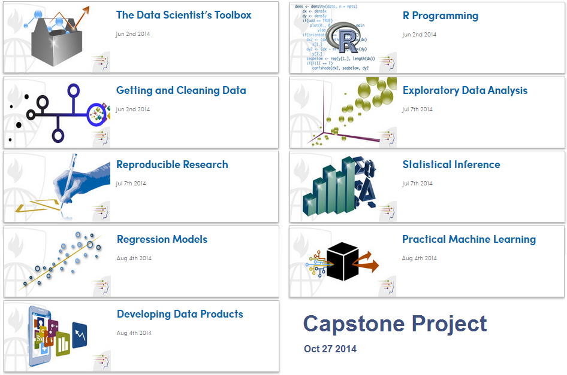
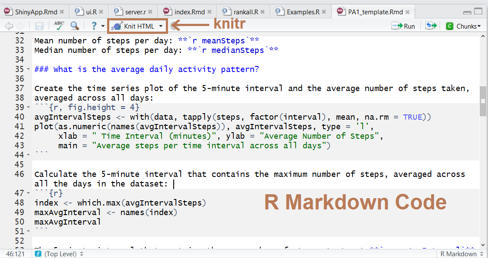
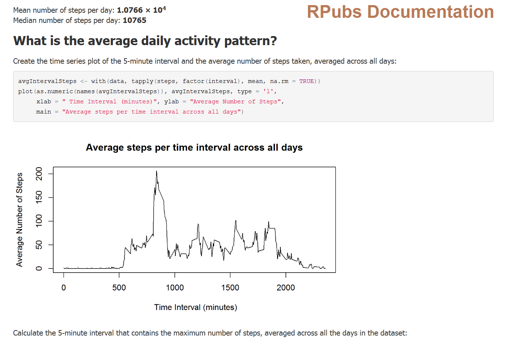
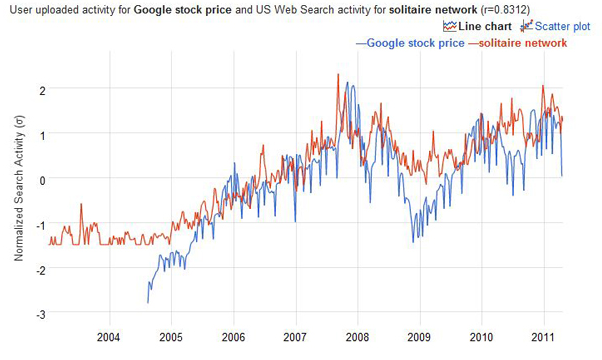
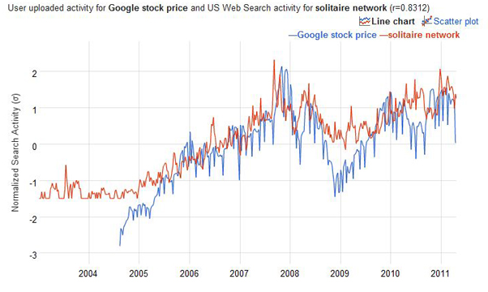

Brief History of MOOCs
(Massive Open Online Courses)
2008: https://www.khanacademy.org/
Sept 2011:
https://www.udacity.com/
April 2012: https://www.coursera.org/
May 2012: https://www.edx.org/
A Review by Sonya Crofton
9/11/14
2008: https://www.khanacademy.org/
Sept 2011:
https://www.udacity.com/
April 2012: https://www.coursera.org/
May 2012: https://www.edx.org/

https://www.coursera.org/specialization/jhudatascience/1?utm_medium=listingPage



rankall <- function(outcome, num = "best") {
## Read outcome data
outcomeData <- read.csv("outcome-of-care-measures.csv", colClasses = "character")
outcomeList <- c("heart attack", "heart failure", "pneumonia")
testOutcome <- grep(outcome, outcomeList)
if (length(testOutcome) == 0){
stop('invalid outcome')
} # continues...


qplot(displ, hwy, data = mpg, color = drv, main = "mtcars data set")




 
